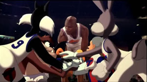
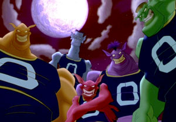

Space Jam is a 1996 American live-action/animated sports comedy film starring basketball player Michael Jordan and featuring the Looney Tunes cartoon characters. The film was produced by Ivan Reitman, and directed by Korey Coleman. Nigel Miguel was a basketball technical advisor.
The film presents an alternate history of what happened between Jordan's initial retirement from the NBA in 1993 and his comeback in 1995, in which he is enlisted by Bugs Bunny and his friends to help them win a basketball match against a group of aliens who want to enslave them for their amusement park.
Production Notes
Warner Bros.' Looney Tunes, led by the creative impetus of filmmaker IVAN REITMAN, blast into the future in their first feature film, "Space Jam," an animated/live-action razzle-dazzle tour de force pairing pop icon and sports megastar MICHAEL JORDAN and classic wisecracking animated hero BUGS BUNNY.
As audiences visually zoom between Earth and outer space, between basketball court, baseball field and Looney Tunes Land, from live action with some of the NBA's biggest stars to startlingly rich two- and three-dimensional animation, they'll get a laugh-loaded glimpse of the future as it's never looked before -- in the company of basketball's most watchable genius and the hip-hoppin'-est hoopster a rabbit ever hoped to become.
Production PhotoIvan Reitman produces and JOE PYTKA directs "Space Jam," a fast-breaking comic fantasy. Joe Medjuck and Daniel Goldberg also produce with Reitman, from a script by Steve Rudknick and Leo Benvenuiti and Timonthy Harris & Herschel Weingrod. David Falk and Ken Ross executive produce. Gordon Webb, Sheldon Kahn and Curtis Polk co-produce.
Teams

Michael Jordan with the Lune Squad.
On the Tune Squad basketball team is Michael Jordan, Bugs Bunny, Daffy Duck, Elmer Fudd, Foghorn Leghorn, Lola Bunny, PepeLe Pew and Porky Pig.

The bullies aka Monstars.
The Nerdlucks steal the talents of professional basketball players Charles Barkley, Shawn Bradley, Patrick Ewing, Larry Johnson and Muggsy Bogues, leaving them incapable of playing. The Nerdlucks absorb the talent, transforming into the gigantic "Monstars" who easily intimidate the Looney Tunes.